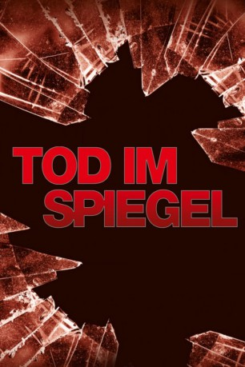

#5122 Tod im Spiegel
Alternativ: Shattered
 
 IMDB-Wertung: 6.5 / 10
IMDB-Wertung: 6.5 / 10  Metascore: 0
Metascore: 0 
Das Leben von David Merrick hängt lange an einem seidenen Faden, doch schließlich gelingt den Ärzten das Kunststück seine Gesundheit wiederherzustellen. Doch David kann sich weder an seine Idendität erinnern noch an irgend welche Details aus seiner Vergangenheit. Ohne einen Hinweis auf sein bisheriges Leben baut er sich eine neue Identität auf. Doch die Vergangenheit holt den Amnesiepatienten langsam aber umso unerbittlicher ein. Jeder in seiner Umwelt scheint mehr über ihn zu wissen, als er selbst. Privatdetektivs Gus Klein soll sein früheres Leben aufdecken. Ans Licht kommt seine frühere Beziehung Judith ein fein gesponnenes Komplott durchgezogen hat und die Tatsache, dass der wahre David Merrick schon lange tot ist. Doch durch die Enthüllungen gerät David erneut in Lebensgefahr.
Jahr: 1991
Dauer: 98 Minuten
FSK: 16
Land: USA Studio: MGMTonspuren: DTS - ,
Untertitel:
Auflösung: 1080p (1920x1080) Größe: 11673 MB
Genre: Thriller, Drama, Krimi, Mystery
Regisseur:  Wolfgang Petersen
Wolfgang Petersen
Drehbuch: Roberto Gagnor
Soundtrack:
Darsteller:
 Tom Berenger als Dan Merrick
Tom Berenger als Dan Merrick Bob Hoskins als Gus Klein
Bob Hoskins als Gus Klein Greta Scacchi als Judith Merrick
Greta Scacchi als Judith Merrick Joanne Whalley als Jenny Scott
Joanne Whalley als Jenny Scott Corbin Bernsen als Jeb Scott
Corbin Bernsen als Jeb Scott- Bert Rosario als Rudy Costa
- Kellye Nakahara als Lydia
- Frank Cavestani als Cop
- Debi A. Monahan als Nancy Mercer
- Jedda Jones als Sadie
- Scott Getlin als Jack Stanton
- Dona Hardy als Pet Shop Woman
- Jasmin Gabler als Jeb's Secretary
- Charlene Hall als Receptionist
- Dierk Torsek als Dr. Benton
- George Herbert Semel als Plastic Surgeon
Datei: X:\1991\Tod im Spiegel (1991, FSK16, 1920x1080).mkv seit 23.12.2016
Festplatte: HD 1987-1991
 Es gibt insgesamt 53 Filme in der Gruppe '1991'
Es gibt insgesamt 53 Filme in der Gruppe '1991'